1. Microsoft Visual С# програмалау ортасында жұмыс істеу негіздері. Алғашқы программа құру
1.1 C# программалау ортасы туралы жалпы мәліметтер
С# тілін («Си-шарп» деп айтылады, мұнда Бетховеннің «Ай сонатасындағы» музыкалық нотация — до-диез таңбасы (#) пайдаланылған; ағылшындар оны «си-шарп» деп оқиды) Microsoftкомпаниясының маманы Андерс Хейлзберг (Anders Hejlsberg) жаңа объектіге бағытталға программалау тілі ретінде С, C++, Java және BASIC тілдерінің негізінде жасап шығарған. Бұл пәнде осы тілдің негізгі элемент-тері қарастырылады.
С # тілі Microsoft фирмасының .NET (дот-нет) архитектурасы үшін программалар жазуға арналған тілі. .NET – программалау технологиясындағы жаңа платформа, ол желіге қосыл-ған компьютерлерге арналып жасалған.
.NET көмегімен шағын мобильді компьютер-лерде орындалатын программалар жазу ыңғай-лы деп есептеледі. Бұл технология Visual Studio.NET деп аталады да, бұл ортада Visual Basic, басқарылатын С++ және С # тілдерінде программалар жасау қарастырылған, бірақ ол осылармен ғана шектеліп қалмайды.
С # тілінің мүмкіндігі Java тілімен қатарлас, осы екі тіл қазіргі алдыңғы қатарлы технологияларға жатады. С# тілін сүйемелдейтін .NET платформасының программа жасау ортасы бастапқы программаны бірден машиналық кодқа емес, MicroSoft Intermediate Language (MSIL не IL) атты аралық тілге аударады. Ол ОЖ-дан, ком-пьютер типінен тәуелсіз командалардан тұра-ды да, бірден орындалмай, тілдің жалпы орындалу ортасы Common Language Runtime – CLR деп аталатын жүйе арқылы атқары-лады. CLR ортасы кез келген ОЖ-да орында-ла береді. Программаны орындау кезінде, CLR JIT-компиляторын (just in time – дер кезінде) шақырады. Компилятор программаны бөліктерге бөле отырып, оның тек осы сәтте керек бөлігін ғана орындайды.
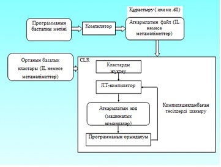Компилятор жұмысы нәтижесінде құрас-тыру (сборка) деп аталатын ехе немесе dll типті файл жасалады, онда IL тіліндегі код пен метамәліметтер болады.
Метамәліметтер программада қолда-нылатын объектілер және құрастыру туралы ақпарат сақтайды. Ол тіларалық әрекеттесу, қауіпсіздік, сенімділік сияқты мүмкіндіктерді қамтамасыз етеді.
.NET платформасында көлемді кластар кітапханасы бар, оны осы ортадағы кез келген тілде пайдалана беруге болады.
1.2 С# тіліндегі ең қарапайым программа
/* Example1_1.cs файлы
"Hello world!“ программасы және ағымдағы мерзім мен уақытты экранға шығару */
class Example1_1
{
public static void Main() { // "Hello World!" сөзін экранға шығару
System.Console.WriteLine("Hello World!");
// ағымдағы мерзім мен уақытты шығару
System.Console.WriteLine("The current date and time is " + System.DateTime.Now);
}
}
Бастапқы Example1_1.cs файлы блокнотта немесе кез келген редакторда теріледі. Файл кеңейтілуі (типі) – cs. Осы тип барлық С# программаларына беріледі.
Программаны TurboC# консолдық компиляторы (MS DOS) арқылы орындау үшін:
csc Example1_1.cs жолын тереміз. Компилятор бұл файлды машиналық кодқа түрлендіріп, Example1_1.ехе файлын жасайды. Оның ішкі мазмұнын, яғни программа нәтижесін көру үшін:
Example1_1↵ жолын тереміз. Программа нәтижесі: Hello World! The current date and time is 28.08.2010 12:22:44 PM Программа нәтижесі аздап басқаша да болуы мүмкін, мысалы, мынадай: Hello World! The current date and time is 28.08.2010 12:22:44 Енді программаның әрбір жолын жеке-жеке қарастырып шығайық.
/* Example1_1.cs файлы "Hello world!“ программасы және ағымдағы мерзім мен уақытты экранға шығару */
Бұл С тілдері стиліндегі комментарий, компилятор мұны тек бос орын таңбасы деп есептейді, ол бізге оның жұмысын түсіну үшін ғана керек.
class Example1_1 {
Жүйелі жақша жаңа Example1_1 класының сипатталуы басталғанын көрсетеді. Жақша жабылғанда сипатталу бітеді. Класс ішінде айнымалылар, функциялар – тәсілдер болады.
public static void Main()
Бұл программаның басты функциясы Main (), ол бас әріппен жазылады. Программа осы функцияны орындаудан басталады.
public – бұл қатынасу деңгейінің модификаторы, ол осы тәсілге бұл кластан тыс қатынасу мүмкіндігін көрсетеді,
static – бұл сөз Main() тәсілінің нақты бір объектіге емес, класқа қатысты екенін білдіреді. Eгер static сөзі болмаса, бұл функцияны шақырмас бұрын осы класс объектісін жасап алу керек еді.
System.Console.WriteLine("Hello World!");
Бұл функция аты мына бөліктерден тұрады:
• System — атаулар кеңістігі;
• Console — сол атаулар кеңістігінде анықталған стандартты класс;
• WriteLine — осы класта анықталған тәсіл.
Программалардағы WriteLine және Write тәсіл-дері — Console класын экранға шығару ісін ат-қарады. Write тәсілі экранға (консольға) мәлімет шығарып, курсорды осы жолда қалдырады. Ал WriteLine тәсілі курсорды жаңа жолға көшіреді. Бұл ортада әртүрлі параметрлермен қолданылатын Write тәсілінің 18 сипаттамасы, ал Write-Line тәсілінің 19 сипаттамасы бар екен.
System.Console.WriteLine("The current date
and time is " + System.DateTime.Now);
Мұнда экранға күн-ай мерзімі мен уақытты беретін тәсіл мәлімет шығарады. Now — DateTime объектісінің қасиеті, ол жүйелік дата мен уақытты береді. Now — статикалық қаси-ет, сондықтан оны DateTime объектісін жаса-май-ақ қолдана беру ге болады.
Программа жұмысы нәтижесі:
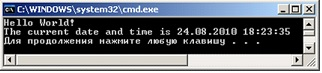
Тағы бір мысал
// Listing1_1.cs файлы
using System;
namespace ConsoleApplication1
{ ///
/// Summary description for Class1
///
class Class1
{ ///
/// The main entry point for the application
///
[STAThread]
public static void Main(string[ ] args)
{ //
// TODO: Add code to start application
//
Console.WriteLine("Hello, World!");
}
}
}
Using System директивасы System атау-лар кеңістігінен тікелей стандартты класс аттарын (кеңістік атын көрсетпей) пайдалануға рұхсат береді.
namespace түйінді сөзі осы программа үшін ConsoleApplication1 атты өз атаулар ке-ңістігін жасайды. Бұл программа объектіле-ріне ат беруге болатынын көрсетеді.
2 не 3 қиғаш сызықтан басталатын жолдар комментарий болып саналады, 3 сызық прог-рамма комментарийлерінен құжат жасауға мүмкіндік береді.
C# тілі объектіге бағытталған тіл, сондықтан оның программасы бір-бірімен өзара бай-ланысқан кластардан тұрады. Бұл программада тек бір ғана класс бар, оған өзіміз Class1 деп ат бердік, класс сипаттамасы class түйінді сөзінен басталады да, аты жазылады.Сонан соң жүйелі жақша ішінде класс элементтері көрсетіледі. Олардағы функциялар мен мәлі-меттер тәсіл – метод деп аталады.
Жоғарыдағы класс ішінде тек бір элемент – Main методы, яғни тәсілі бар. Әр программада осындай бір басты тәсіл болады, программаны орындау содан басталады.
1.3 Программаны компиляциядан өткізу және орындау
С# тіліндегі программа мәтін түрінде жазылады. Кез келген мәтіндік редактор арқылы программаны компьютерде тереміз де, артынан оны компиляциядан өткізіп, сонан соң орындап, нәтижесін аламыз.
Сонымен, компьютердің С# тіліндегі программаны орындауы үшін, оны маш-ина тіліне аударатын компилятор керек екені түсінікті шығар.
Компилятор программа мәтіні жазылған файлды оқып, оны талдайды, қателерін тексереді. Қателері түзетілген соң, программаны орындап, нәтиже беретін атқарылатын файл (исполняемый) жасайды.
Программаны бір рет компиляция-дан өткізген соң, оны әр түрлі бастапқы мәліметтер үшін атқарылатын файлды қайталап орындай отырып, нәтижелер аламыз.
Microsoft Windows NT, Windows 2000, Windows ХР, Windows 2007 операциялық жүйелерінде Visual Studio.NET ортасы қолданылады, ол программалаудыңбіріктірілген ортасы болып табылады, яғни құрамында C# тәрізді мәтіндік редакторды, компиляторды, т.б. қосымша програм-маларды біріктіріп тұрады.
C# тілінің элементтері
1.Тілдің құрамы
Кез келген табиғи тілдің мәтінінде символдар, сөздер, сөз тіркестері және сөйлемдер болады. Осындай элементтер программалау тілдерінде де болады, мұнда бірақ сөздер – лексемдер (қарапа-йым конструкциялар), сөз тіркестері – өрнектер деп, ал сөйлемдер – операторлар деп аталады.
Лексемдер симолдардан тұрады, өрнектер – лексемдер мен символдардан, ал операторлар – символдардан, өрнектерден және лексемдерден тұрады.
Тілдің алфавиті немесе оның символдары — бұл бөлінбейтін негізгі белгілер, солардантілдің барлық мәтіндері құрастырылады. С# тілінің алфавиті ретіне Unicode символдарықолданылады. Unicode кодтары барлық қолданылатын алфавиттерді бірден бейнелей алады. Оныңалғашқы 128 символы ANSI-кодтар кес-тесіне сәйкес келеді.
Лексем (token-токен) немесе қарапайым конструк-ция — өзіндік мағынасы бар тілдің ең кішібірлігі. Олардың құрамы:
- Идентификаторлар;
- Түйінді сөздер;
- Операция таңбалары;
- Айыру таңбалары;
- Константалар (литералдар).
2. Атаулар, айнымалылар және константалар С# тілінің алфавиті Си ++ тілімен бірдейдеуге болады:
- бас және кіші латын әріптері;
- 0-ден 9-ға дейінгі араб цифрлары;
- арнайы белгілер: [] {} , . ( ) + - / * \ | % ; : ? <> = ! & # ^ " ';
- айыру символдары: бос орын (пробел), табуляция символы, жаңа жолға көшу таңбасы
Символдардан лексемдер құралады, олар:
- идентификаторлар
- түйінді сөздер
- операция таңбалары
- костанталар, яғни тұрақтылар
- бөлгіштер (жақша, нүкте, үтір, айыру символдары)
Идентификаторлар – программалық объектінің аты (атауы). Әріп немесе астын сызу таңбасыиденти-фикатордың бірінші символы болуы мүмкін, бірақ цифр бола алмайды.
Идентификаторлармысалдары: X, bc, A12, Bagasy, BITES_PER_WORD , aty_goni
Түйінді сөздер (keyword) –компилятор үшін арнайы мәні бар қордағы (резервтегі) идентификаторлар.
Операция таңбалары – операндтармен (мәндер-мен) іс-әрекет атқару үшін қолданылатын бірнемесе бірнеше символдар.
Тұрақтылар – программа орындалу барысында өзгермейтін шамалар.
Комментарийлер – компилятор үшін маңызы жоқ программаның бөлігі және программа мәтінін оқу ыңғайлы болуы үшін қолданылады. Ол /* және */ қоршалып тұрады немесе жолсоңында // символынан басталады.
С# тілінің түйінді сөздері тізімі
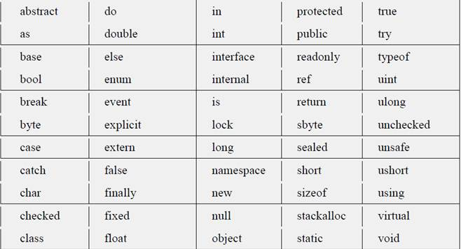3.С# тіліндегі мәліметтер типтері
С# тілі қатаң түрде типтелген тіл, яғни әрбір ай-нымалы немесе объект данасы белгілі біртипке жатқызылуы тиіс, бұл орындалатын амалдардың дұрыстығын тексеру мүмкіндігін береді.
Егер элементтер құрастырылуын негізге алсақ, онда типтер қарапайым және құрылымдыболып бөлінеді.
Жасаушыға байланысты типтер құрамдас және программалаушы анықтаған болып бөлінеді.
Статикалық типтегі мәліметке жады бірден бөлінеді де, динамкалық типтегі мәліметке жадыоны жариялау кезінде емес, оны программада пайдалану кезінде бөлінеді.
С# тіліндегі мәліметтер типтерін жіктеу түрлері
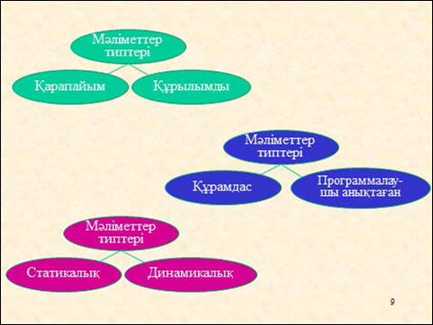С# тілінде құрамдас 15 тип бар, олардың сегізі бүтін сандық типке жатады. Олар — С# түйінді сөздерімен анықталады да, кез келген программада қолданыла береді.
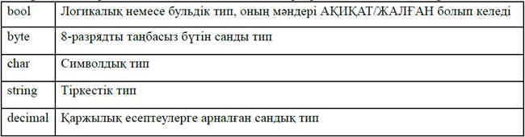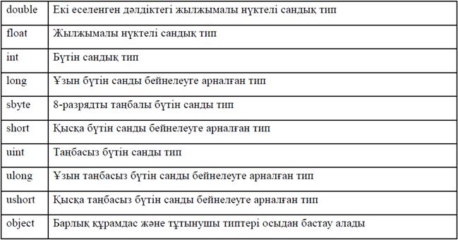
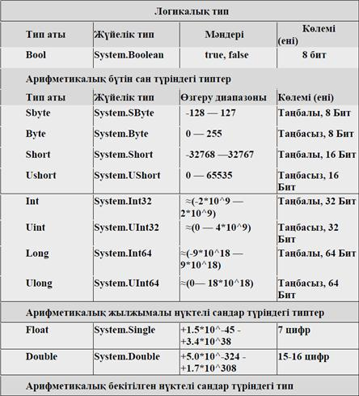
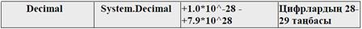
Программада кездесетін константалардың жазылуына қарай, яғни солардың сыртқыбейнесіне сәйкес белгілі бір тип тағайын-далады. Егер ол типті өзгерту керек болса, онда санныңсоңына жалғастырылып кер-екті типтің атына сәйкес бір әріп – L, l (long) немесе U, u (unsigned) жазылады. Мысалы, 32L константасының типі long және ол компьютердің жедел жадында 4 байт орын алады. Қажет болса, L және U әріптерін қатарластыра да қолдануға бола-ды, мысалы, 0x22UL немесе 05Lu.
Мәліметтердің decimal типі үтірден кейінгі 28 таңбаға дейін сақтай алады, ол көбінесеақшалық мәндерді сақтау үшін қолданылады.
Айнымалыға немесе константаға float типін бергенде, мән соңына "F" или "f " символынқоюға, мысалы:
double myDoublel = 1234.5678;
double myDouble2 = 1234.5678d;
Символдық тип-Символдық тип char 16-биттік Unicode символ болып табылады.
Unicode – әлем тілдерінің барлық символдарын электрондық формада бейнелеуге арналғанстандарт.
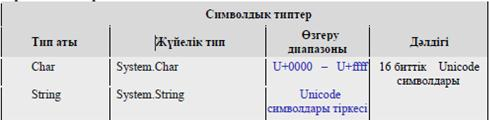Төменде мәліметтердің 11 сандық типтерінің әрқайсысы үшін ең кіші (минимал) және еңүлкен (максимал) мәндерін көрсететін программа мысалы келтірілген.
// MinAndМax.cs программасы
using System;
class MinAndMax
{ public static void Main()
{ Console.WriteLine("sbyte: {0} to {1}",sbyte.MinValue, sbyte.MaxValue);
Console.WriteLine("byte: {0} to {1}",byte.MinValue, byte.MaxValue);
Console.WriteLine("short: {0} to {1}",short.MinValue, short.MaxValue);
Console.WriteLine("ushort:{0} to {1}",ushort.MinValue, ushort.MaxValue);
Console.WriteLine("int: {0} to {1}",int.MinValue, int.MaxValue);
Console.WriteLine("uint: {0} to {1}",uint.MinValue, uint.MaxValue);
Console.WriteLine("long: {0} to {1}",long.MinValue, long.MaxValue);
Console.WriteLine("ulong: {0} to {1)",ulong.MinValue, ulong.MaxValue);
Console.WriteLine("float: {0} to {1}",float.MinValue, float.MaxValue);
Console.WriteLine("double:{0} to {1}",double.MinValue, double.MaxValue);
Console.WriteLine("decimal:{0} to {1}",decimal.MinValue, decimal.MaxValue);
}
}
Программа жұмысы нәтижесі:
sbyte : -128 to 127
byte: 0 to 255
short: -32768 to 32767
ushort: 0 to 65535
int: -2147483648 to 2147483647
uint: 0 to 4294967295
long: -9223372036854775808 to 9223372036854775807
ulong: 0 to 18446744073709551615
float : -3.402823E+38 to 3.402823E+38
double: -1.79769313486232E+308 to 1.797693134862Э2Е+308
decimal: -79228162514264337593543950335 to 79228162514264337593543950335
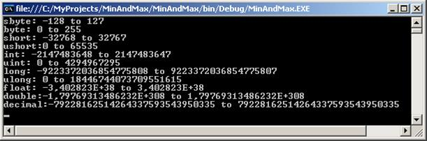# тілінде bool типі бар, ол true немесе false сияқты екі мәнді қабылдай алады. Салыстыруоперацияларының нәтижелері (==, !=, <, >, <= и >=) — bool типінде болады. Bool типі бүтін типкекелтіріледі (true – 1, ал false — 0), бірақ ол тікелей орындалуы тиіс.
Char типі бір символды, aл string — бірнеше сим-волдардан тұратын сөз тіркестерін сақтауүшін қажет.
Char типі бүтін типтерден өзгеше болып келеді және де оны sbyte немесе byte типтеріменшатастыр-мау керек.
Char типіндегі айнымалылар 16 бит (бірақ ол short немесе ushort типтеріненөзгеше) орын алады.
С# тілінде мәліметтер типтерінің элементтерді сақтау тәсіліне қарай тағы екі категориясы(санаты) бар: мәндертиптері (value types) және сілтемелік типтер. Мәндертиптері дегеніміз шамағакомпи-лятор бөліп берген компьютер жадындағы биттер тізбегі.
Сілтемелік типтер мәліметтердің өздерін емес, олардың адрестерін сақтайды, мұндағы мәнкомпью-тердің динамикалық жадындағы басқа бір объектіге (үйіндіге – кучаға) сілтеу арқылыжасалады. Мәндер типтеріне логикалық тип, арифметикалық тип, құры-лымдар және саналатын(перечисления) типтер жа-тады. Сілтемелік типтерге жиымдар, сөз тіркестері (жолдар) жәнекластар жатады.
4. C# тілінің константалары
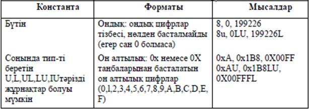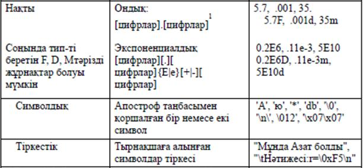
/* Example2_7.cs константаларды қолдану */
class Example2_7
{ public static void Main()
{
const int Length = 3;
// математикалық константа Пи
const double Pi = 3.14159;
// жарық жылдамдығы метр/секунд const double SpeedOfLight = 2.99792е8; Console.WriteLine("Length = " + Length);
Console.WriteLine("Pi = " + Pi);
Console.WriteLine("SpeedOfLight = " + SpeedOfLight);
}
}
Программа нәтижесі
Length = 3
Pi = 3.14159
SpeedOfLight = 299792000
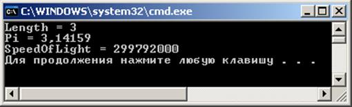5. C# тілінің негізгі операциялары
Төменде C# негізгі операциялары олардың приоритеттері бойынша берілген. Операндтарының санына қарай олар унарлық, бинарлық және тернарлық болып бөлінеді.
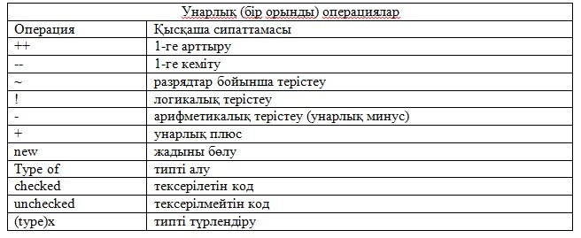// Инкремент (++) және декремент (--) операциялары
using System;
namespace Increment1
{ class Class1
{ static void Main()
{
int x = 3, y = 3;
Console.Write("Prefix opnek mani: ");
Console.WriteLine( ++x);
Console.Write(" х-ting natigelik mani: ");
Console.WriteLine( x);
Console.Write("Postfix opnek mani: ");
Console.WriteLine( y++);
Console.Write(" y-ting natigelik mani: ");
Console.WriteLine( y);
}
}
}
Программа жұмысы нәтижесі:
Prefix opnek mani: 4
х-ting natigelik mani: 4
Postfix opnek mani: 3
y-ting natigelik mani: 4
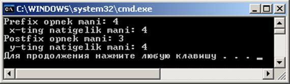Көбейту операциясы int, uint, long, ulong, float, double, decimalтәрізді арифметикалық типтегіоперандтарға қолданылады. Егер екі операнд та бүтін сан болса, бөлінді де бүтін сан болады.
Бөлу операциясыда жоғарыдағы арифме-тикалық типтегі операндтарға қолданылады. Егер екіоперанд та бүтін сан болса, бөлінді де бүтін сан болады, әйтпесе бөлінді типі тип-терді түрлендіруережесіне сәйкес тағайын-далады.
Қалдық табу (%) операциясы әртүрлі типтегі - бүтін, нақты, қаржылық шамаларғақолданылады. Егер екі опе-ранд та бүтін сан болса, нәтиже x-(x/y)*y формуласымен анықталады. Егер бір операнд нақты сан болса, нәтиже x-n*y (n – х-ті у-ке бөлгендегі бүтін сан) формуласыменанықталады.
Мысалы:
using System; // Kaldyk_tabu.cs программасы
namespace Kakdyk_tabu
{ class Class1
{ static void Main()
{ int x = 11, y = 4; float z = 4;
Console.WriteLine("x = {0} y = {1} z = {2}",x,y,z);
// Нәтиже x = 11 y = 4 z = 4
Console.WriteLine("z * y = " + z * y);
// Нәтиже 16
Console.WriteLine("z * 1e308 = " + z * 1e308);
// Нәтиже шексіздік
Console.WriteLine("x / y = " + x / y);
// Нәтиже 2 Console.WriteLine("x / z = " + x / z);
// Нәтиже 2.75 Console.WriteLine("x % y = " + x % y);
// Нәтиже 3 Console.WriteLine("1e-324 / 1e-324 = " + 1e-324 / 1e-324);
// Нәтиже NAN
}
}
}
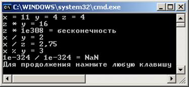C# тілінің операторлары
- Жалпы мәліметтер
- Тармақталу операторы
- Ауыстырғыш оператор
- Циклдік операторлар
- C# тіліндегі жиымдар
- Бір өлшемді жиымдар
- Төртбұрышты жиымдар
- Сатылы жиымдар
1.Жалпы мәліметтер
Кез келген программаны алгоритм блокта-рының өзара байланысуына қарай үш түрлі басқаруқұрылымынан жасауға болады. Оларды құрылымдық программалаудың базалық құрас-тырғыштары(конструкциялары) деп атайды.
Бірнеше операторлардың тізбектей орында-луынан тұратын құрастырғыш реттік (сызық-тық) деп аталады. Қандай да бір шарттың орын-далуына тәуелді құрастырғышты тармақталу депатаймыз. Цикл операторлар тізбегінің бірнеше рет қайталап орындалуын білдіреді.
Оператор – тілдің қарапайым сөйлемі, ол белгілі бір әрекет немесе амал орындап, ;таңбасымен аяқталады.
Сызықтық (реттік) құрылым бірінен кейін бірі орындалып тізбектеле орналасқан бір-нешеоператорлардан тұрады.
Тармақты – шартқа байланысты екі оператордың бірінің орындалуы
Цикл – операторлар бөлігінің бірнеше рет қайталана орындалуы.
Кез келген нүктелі үтірмен аяқталатын өрнек оператор болып саналады. Ол көбінесе берілгенөрнек бойынша есептеу ісін атқарады. Бос опера-тор да өрнектің бір түрі болып табылады.
Мысалдар:
i++; // инкремент операциясы
a *= b+c; // көбейтіп меншіктеу амалы
fun(i, k); // функцияны шақыру орындалады
while(true); // бос оператордан цикл (шексіз)
Блок немесе құрама оператор – бұл жүйелі жақшалармен шектелген сипаттамалар меноператорлар тізбегі {…}. Блок компилятор үшін бір оператор сияқты орындалады, ол синтаксисбойынша бір оператор болғанмен, алгоритм бойынша бірнеше операторлардан тұрады.
Басқару операторлары
Бұлар программадағы операторлардың орын-далу реттілігін анықтайды да, алгоритмдерді жү-зеге асырудың негізгі құралы болып табылады.
Басқару операторларының түрлері (категория-лары – санаттары):
- Таңдау операторлары, олар мынадай түйінді сөздер арқылы енгізіледі: if, if ... else ..., switch.
- Циклдік (қадамдық – итеративтік) операторлар, while, do ... while, for, foreach түйінді сөздеріарқылы енгізіледі.
- Көшу (ауысу) операторлары, goto, break, continue түйінді сөздері арқылы енгізіледі.
Таңдау (тармақталу) операторы
Тармақталу операторлары: if, else және ауыстырғыш оператор: switch if шартты операторы есептеу жолының екі бағытта тармақталуын жүзеге асырады.
Оператор форматы:
if(өрнек) 1-оператор;[else2-оператор;]
Шартты оператордың құрылымдық схемасы.
Switch операторы
switch (ауыстырғыш) операторы есептеу процесін бірне-ше тармаққа бөліп жібереді. Оныңалгоритмдік схемасы келесі слайдта көрсетілген.
Оператор форматы:
switch ( өрнек )
{
case 1_тұрақты_өрнек: [1_операторлар_тізімі]
case 2_тұрақты_өрнек: [2_операторлар_тізімі]
...
case n_тұрақты_өрнек: [n_операторлар_тізімі]
[default: операторлар ]
}
C# тіліндегі жиымдар (массивтер)
C# тіліндегі жиымдар C/С++ тілдерінен өзгеше-леу болып келеді. Бірден мысалдар келтірейік.
int[ ] k; //k жиымын анықтау k=new int [3]; //3 бүтін саннан тұратын жиым k[0]=-5; k[1]=4; k[2]=55; //Жиым элементтері //Жиымның 3-элементін экранға шығару Console.WriteLine(k[2].ToString()); Бұлар түсінікті шығар. Жиым былай анықталады: int[ ] k; Мынадай вариантлар дұрыс емес: int k[ ]; // Қате! int k[3]; // Қате! int [3] k; // Қате!
Жиымды сипаттау үшін мәлімет типінен соң, бос тік жақшалар қойылады да, оның атыжазылады:
float[ ] ar;
ar айнымалысының типі — жылжымалы нүктелі сандар жиымы (нақты сан), ал негізінде ar— бұл вариантуыш. С# тілінде жиым сілтемелік тип (refe-rence type) болып табылады. Сөз тіркесі де осы типке жатады. ar айнымалысының алғашқы анықталған мәні — null. Бұл жиымға компьютер жадынан орынбөлу үшін, new операторы арқылы жиымдағы элемент-тер санын көрсету керек:
ar = new float[3];
Жоғарыдағы екі операторды біріктіріп жазуға да болады:
float[ ] ar = new float[3];
Бұған қоса, жиымды сипаттау кезінде оны бірден инициалдауға болады:
float[ ] ar = new float[3] { 3.14, 2.17, 100 };
Инициалдау мәндерінің саны жиымда көрсетілген элементтер санымен сәйкес болуы тиіс.
Инициалдау кезінде жиым элементтері санын бермеуге де болады:
float[ ] аr = new float[] { 3.14, 2.17, 100 };
new сөзін жазбауға да рұхсат етілген:
float[ ] аr = { 3.14, 2.17, 100 };
Кейіннен программада arайнымалысына басқа өлшемдегі float типін меншіктеуге де болады:
ar = newfloat[5];
Мұнда float типті 5 мәнді сақтауға арналған жады бөлінеді, алғашқыда олардың бәрінің де мәні 0-ге тең деп саналады.
Алдыңғы бөлінген float типті 3 мәнді сақтауға арналған жады қоқыс ретінде (garbagecollection) өздігінен босатылады, өйткені С# тілінде delete операторы жоқ.
С# тілінде бір өлшемді жиымдар және одан өзге жиымдардың жиымы болып табылатын екі(одан да көп) өлшемді төртбұрышты және сатылы (тураланбаған - jagged) жиымдар құру мүмкіндікбар.
6 бүтін саннан тұратын ажиымының теріс элемент-терінің қосындысы мен санын және еңүлкен элемен-тін анықтайтын программа құрамыз.
using System;
namespace Listing6_1
{ class Class1
{ static void Main()
{ const int n = 6;
int[ ] a = new int[n] { 3, 12, 5, -9, 8, -4 };
Console.WriteLine("Берілген жиым:" );
for ( int i = 0; i < n; ++i ) Console.Write( "\t" + a[i] );
Console.WriteLine( );
long sum = 0; // теріс элементтері қосындысы
int num = 0; // теріс элементтері саны
for ( int i =0; i < n; ++i )
if ( a[i] < 0 )
{ sum += a[i]; ++num; }
Console.WriteLine(" Теріс сандар қосындысы = " + sum );
Console.WriteLine(" Теріс сандар саны = " + num );
int max = a[0]; // максимал элемент
for ( int i = 1; i < n; ++i ) if ( a[i] > max ) max = a[i];
Console.WriteLine( "Максимал элементі = " + max );
}
}
}
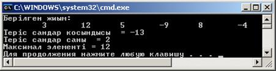
C# тілі негізінде Windows-қосымшаларын жасау
Windows жүйесі ортасында программалау ерекшеліктері:
• Алдыңғы дәрістерде консолдық программалар жасау ар-қылы C# тілінің мүмкіндіктеріментаныстық. Енді Windows ортасында .NET кітапханалары жұмысын қарастырып, операциялық жүйемүмкіндіктерін толығырақ пайдалана бастаймыз.
• Windows жүйесі ортасында программалау ерекшеліктері:
• Көп тапсырмалы режим – жүйеде бір мезетте бірнеше программа жұмыс істей алады, әрпрограммаға жеке жа-ды аймағы бөлініп, процессор уақыты да бөлініп беріліп, сыртқықұрылғыларды да олар ортақ пайдалана алады;
• Программалар аппаратурадан тәуелсіз істейді – олар тікелей құрылғыларға емес, ОС-мен байланыс жасайды, сондықтан құрылғылардың параметрлерін программа есепке алмайды, олардрайверлер арқылы басқарылады.
• Қолданушымен стандартты түрде графикалық интер-фейс орнатылып, әр программа бір терезеарқылы тұтынушымен байланысады, терезелер стандартты элементтерден тұрады;
• Әртүрлі программалар арасында мәлімет алмасу ісі жүргізіледі, олар буфер арқылы немесе OLE мүмкінді-гімен жүргізіле береді;
• Ескі программаларды да орындау мүмкіндігі – Windows жүйесінің 32-разрядты ортасында 16-разрядты орта программалары, MS DOS жүйесінің программалары да орындала береді;
• Windows-қосымшаларын жасайтын оқиғалық басқару қағидасына негізделген программалауорындалады.
Оқиғаны Windows жүйесі қабылдап, хабарламаға (тышқан шертілді, перне басылды) түрлендіреді, Хабарлама қолданушыдан да, ОС-тан да, басқа программадан да келуі мүмкін. Стандартты хабар-ламалардың бірнеше түрлері бар, олар иерархияға сәйкес жұмыс істейді.
Хабарламалар жалпы кезекке келіп түседі де, сонан кейін қосымшалар арасында кезеккетұрады. Әрбір қосымша программаның хабарламаларды өңдеу циклі болады, солар хабарламалардыкезекпен ала отырып, ОС арқылы соны өңдейтін ішкі программаларды шақырады.
Делегаттар
Делегаттың анықтамасы
•Делегат— бұл тәсілдерге сілтемелерді сақтауға арналған класс түрі. Делегатты кез кезген класс тәрізді параметр ретінде беруге, осыдан кейін ондағы инкапсуляцияланған тәсілді шақыруғаболады.
• Делегаттар оқиғаларды қолдау үшін, сонымен қатар, тілдің тәуелсіз конструкциясы ретіндеқолданылады.
• Делегаттың сипаттамасы оның көмегімен шақырылуы мүмкін тәсілдер сигнатурасын анықтайды:
• [ атрибуттар ] [ спецификаторлар ] delegate тип аты(
• [ параметрлер ] )
• Делегатты сипаттау мысалы:
• public delegate void D ( int i );
• Делегаттың базалық класы System.Delegate болып табылады
Делегаттарды қолдану
• Делегаттар, негізінен, келесідей жағдайлар үшін қолданылады:
• шақырылған тәсілді компиляция кезінде емес, программаның орындалуы кезінде динамикалықтүрде анықтауға мүмкіндік алу;
• объектілер арасында «шығу көзі — бақылаушы» типі бойынша байланысты қамтамасыз ету;
• оларға басқа тәсілдерді беруге болатындай әмбебапты (универсалды) тәсілдерді құру (керішақырулар механизмін қолдау).
Операциялар
• Делегаттарды теңдікпен немесе теңсіздікпен салыстыруға болады. Егер екі делегаттың екеуінде де тәсілдерге сілтеме болмаса немесе екеуінде де бірдей тәсілдерге бірдей реттілікпен сілтемелержасалған болса, олар тең болады.
• Бірдей типті делегаттармен қарапайым және күрделі меншіктеу операцияларын орындауғаболады.
• string тіркестері сияқты, делегат та өзгермейтін мәлімет типі болып табылады, сондықтан кезкелген өзгерістер жағдайында жаңа экземпляр құрылады, ал ескісін кейіннен қоқыс жинаушы(сборщик мусора) өшіріп тастайды, яғни жояды.
• Делегатты қолдану синтаксисі тәсілді шақыру синтаксисімен бірдей болып келеді. Егер делегаттабірнеше тәсілге сілтемелер сақталатын болса, олар тізбектеле, делегатқа қосылған реттілігіменшақырылады.
Оқиғалар
• Оқиғаның анықтамасы
• Оқиғалар механизмі
• Делегаттар мен оқиғалар туралы қосымша
Оқиғаның анықтамасы
• Оқиға — кластың басқа объектілеріне (бақылаушыларға) өздерінің күйінің өзгеруі туралыхабарламалар жіберуіне мүмкіндік беретін класс элементі.
• Бақылаушы болу үшін объектінің оқиғаларды өңдеушісі болуы керек және ол оқиғалар өңдеушісіншығу көзі объектісінде (в объекте-источнике) тіркеу керек.
Мысал
class Subj { // -------------- Оқиғаның шығу көзі (класс-источник)
public event EventHandlerOops; // Станд . типті оқиғаны сипаттау
public void CryOops() { // Оқиғаны тудыратын тәсіл
Console.WriteLine( "OOPS!" ); if ( Oops != null ) Oops( this, null ); }
} class Obs { // --------------- Бақылаушыкласс --------------------------
public void OnOops( object sender, EventArgs e ) { // Оқиғаны өңдеуші
Console.WriteLine("Оййй!" );
}
}
class Class1 {
static void Main() {
Subj s = new Subj();
Obs o1 = new Obs();
Obs o2 = new Obs();
s.Oops += o1.OnOops; // өңдеушіні тіркеу
s.Oops += o2.OnOops; // өңдеушіні тіркеу
s.CryOops();
}
}
Оқиғалар механизмі
• Оқиғалар делегаттар негізінде құрастырылған: делегаттардың көмегімен оқиғаларды өңдеушітәсілдер шақырылады. Сондықтан класта оқиғаны құру келесі бөлімдерден тұрады:
o оқиғалар өңдеушілерінің сигнатурасын анықтайтын делегатты сипаттау;
o оқиғаны сипаттау;
o Оқиғаны тудыратын тәсілді (тәсілдерді) сипаттау.
• Оқиғаның синтаксисі:
• [ атрибуттар ] [ спецификаторлар ] event тип аты
Енгізу-шығару мысалдары. Басқару операторлары элементтеріне мысалдар
- Консольдік енгізу-шығару (Console класы ) мүмкіндіктері;
- Басқару операторлары элементтері (тармақ, цикл, басқаруды беру).
Консольге мәлімет шығару
using System;
namespace A
{ class Class1
{ static void Main()
{
int i = 3;
double y = 4.12;
decimal d = 600m;
string s = "Берік";
Console.Write( i );
Console.Write( " y = {0:F2} \nd = {1:D3}", y, d );
Console.WriteLine( " s = " + s );
}
}
}
Консольден мәлімет енгізу
using System;
namespace A
{ class Class1
{ static void Main()
{
string s = Console.ReadLine(); // вводстроки
char c = (char)Console.Read(); // вводсимвола
Console.ReadLine();
stringbuf; // буфердлявводачисел
buf = Console.ReadLine();
int i = Convert.ToInt32( buf ); // преобразованиевцелое
buf = Console.ReadLine();
double x = Convert.ToDouble( buf ); // преобразованиеввещ.
buf = Console.ReadLine();
double y = double.Parse( buf ); // преобразованиеввещ.
}
}
}
Басқару операторларының элементтері
Блок (құрама оператор)
Блок — жүйелі жақшаларға алынған операторлар тізбегі:
begin end { }
Блок компилятор үшін бір оператор болып саналады, синтаксис бойынша бір оператор керекболғанмен, алгоритм бойынша — бірнеше оператор орындалады. Блокта бір-ақ оператор болуы мүмкін, кейде ол тіпті бос болады.
«Өрнек» операторы
Нүктелі үтірмен аяқталған кез келген өрнек оператор болып есептеледі, ол белгілі бір амалдарорындауды керек етеді.
i++; // выполняется операция инкремента
a *= b + c; // выполняется умножение с присваиванием
fun( i, k ); // выполняется вызов функции
Бос оператор
o Бос оператор ; синтаксис бойынша оператор керек болғанмен, мағынасы бойынша — олқажет етілмегенде қолданылады:
o while ( true );
Бос оператордан тұратын бұл цикл шексіз орындалуды көрсетеді
o ;;;
Үш бос оператор
Тармақталу операторы:
o тармақталу (if)
o ауыстыру (switch)
if шартты операторы
if ( a < 0 ) b = 1;
if ( a < b && (a > d || a == 0)) ++b;
else { b *= a; a = 0;
}
if ( a < b ) if ( a < c ) m = a;
else m = c;
else if ( b < c ) m = b;
else m = c;
Интерфейстер. Контейнерлік кластар
• интерфейстерді сипаттау және қолдану;
• объектілерді клондау, салыстыру, реттеу үшін стандартты .NET; интерфейстерін қолдану;
• контейнер (коллекция) түсінігі;
• стандартты .NET топтамаларын (коллекция) қолдану.
-
Интерфейстер. Интерфейс туралы жалпы мағлұматтар
• интерфейс кластардың арнайы бір түрі, ол абстрактілі кластың «шеткі бір түрі (жағдайы)» болыптабылады. Интерфейсте туынды класта жүзеге асырылуы тиіс абстрактілі тәсілдер, қасиеттер жәнеиндексаторлардың жиыны беріледі.
• интерфейс оны іске асыратын кластар қолдайтын әрекет-терді анықтайды.
• интерфейсті қолданудың негізгі идеясы – осындай класс объектілерін бірдей жолдармен қолдануғамүмкіндік беру.
• әрбір класс интерфейс элементтерін өз қалауынша анық-тай алады. Осылайша полиморфизмге қолжеткізіледі: әртүрлі класс объектілері бір тәсілдің шақыруына әртүрлі жауап әрекеттер орындайалады.
• интерфейс синтаксисі класс синтаксисіне ұқсас:
• [ атрибуттар ] [ спецификаторлар ] interface аты [ : ата_тегі ]
• интерфейс_тұлғасы [ ; ]
• Бір интерфейсте бірнеше интерфейс қасиеттері мұра-лану мүмкіндігі бар, мұндайда олардың ата-тектері үтір арқылы бөліне отырып жазылады.
• Интерфейс тұлғасын абстрактілі тәсілдер, қасиеттер мен индексаторлар шаблондары, оқиғаларқұрайды.
• Интерфейс құрамында тұрақтылар, өрістер, операция-лар, конструкторлар, деструкторлар, типтержәне кез келген статикалық элементтер болмауы тиіс.
interface IAction
{
void Draw();
int Attack(int a);
void Die();
int Power { get;
}
Интерфейстердің қолданылу аймағы
•Егер қандай да бір әрекеттер жиынын қолдану тек осы әрекеттерді әртүрлі тәсілдерменорындайтын нақты бір кластар иерархиясы үшін маңызды болса, бұл жиынды иерархияныңабстрактілі базалық класының виртуалды тәсілдері түрінде берген жөн.
•Иерархия шегінде (ішінде) бірдей жұмыс істейтін мүмкіндіктердің барлығын толығымен базалықкласта анықтаған жөн.
•Интерфейстер көп жағдайда әртүрлі иерархия объектілерінің ортақ қасиеттерін көрсету үшінқолданылады.
Интерфейстерді жүзеге асырудың ерекшеліктері
Интерфейсті жүзеге асыратын класс оның барлық элементтерін, оның ішінде, мұраланғандарында анықтауы керек. Егер осындай жағдайда интерфейстің аты нақты түрде көрсетілетін болса, олосыған сәйкес элемент сипатталған интерфейске сілтеме жасауы тиіс.
Өзіндік немесе мұраланған элементтерге нақты сілтеме жасайтын интерфейс класс ата-тектерітізімінде көрсетілуі тиіс.
Класс өзінің ата тегінің барлық тәсілдерін, оның ішінде, интерфейстерді жүзеге асырғандарын дамұралайды. Ол осы тәсілдерді new спецификаторының көмегімен қайта анықтай алады, алайдаолармен тек класс объектісі арқылы ғана қатынас құруға болады.
Параметрлері бар топтамалар (коллекциялар)(класс-прототиптер, generics)
параметрлері ретінде мәліметтер типтері болатын кластар

class Program {
static void Main() {
List
lint.Add( 5 ); lint.Add( 1 );
lint.Add( 3 ); lint.Sort();
int a = lint[2];
Console.WriteLine( a );
foreach ( int x in lint ) Console.Write( x + " ");
}
}
}
Кездейсоқ сандарды пайдалану. Символдар және сөз тіркестері
· Кездейсоқ сандар тізбегін алу;
Жиымдарды пайдаланатын программаларда олардың мәні ретінде кездейсоқ сандардықолданған ыңғайлы болып табылады.
С# кітапханасында кездейсоқ сандар беретін Random класы бар, ол System атауларкеңістігінде анықталған.
Кездейсоқ сандар тізбегін алу үшін алдымен төмендегідей конструктор көмегімен класс экземплярын (данасын) жасау керек:
Random a = new Random(); // 1
Random b = new Random( 1 ); // 2
мұндағы 1-жолдағы параметрсіз конструктор кездейсоқ сандарды уақыт көрсеткіші негізіндеқрастырады. Сондықтан ол қайталаған сайын жаңа сандар тізбегін беріп отырады. Ал, 2-жолдағы int типіндегі параметрі бар конструктор қайталаған сайын тұрақты сандар тізбегін береді.
Кездейсоқ сандар тізбегін алу үшін алдымен төмендегідей конструктор көмегімен класс экземплярын (данасын) жасау керек:
Random a = new Random(); // 1
Random b = new Random( 1 ); // 2
мұндағы 1-жолдағы параметрсіз конструктор кездейсоқ сандарды уақыт көрсеткіші негізіндеқрастырады. Сондықтан ол қайталаған сайын жаңа сандар тізбегін беріп отырады. Ал, 2-жолдағы int типіндегі параметрі бар конструктор қайталаған сайын тұрақты сандар тізбегін береді.
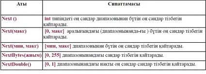
Кездейсоқ сандар тізбегін алу тәсілдерін пайдалану мысалы
using System;
namespace Listing6_10
{ class Class1
{static void Main()
{Random a = new Random();
Random b = new Random(1);
const int n = 10;
Console.WriteLine("\n Диапазон [0, 1]:");
for (int i = 0; i < n; ++i) Console.Write("{0 ,6:0.##}“,a.NextDouble());
Console.WriteLine("\n Диапазон [0, 1000]:");
for (int i = 0; i < n; ++i) Console.Write(" " + b.Next(1000));
Console.WriteLine("\n Диапазон [-10, 10]:");
for (int i = 0; i < n; ++i) Console.Write(" " + a.Next(-10, 10));
Console.WriteLine("\n Массив [0, 255]:");
byte[] mas = new byte[n];
a.NextBytes(mas); for (int i = 0;
i < n; ++i) Console.Write(" " + mas[i]);
}
}
}
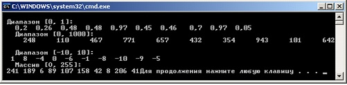
Программа жұмысының нәтижесі:
Диапазон [0, 1]:
0,02 0,4 0,24 0,55 0,92 0,84 0,9 0,78 0,78 0,74
Диапазон [0, 1000]:
248 110 467 771 657 432 354 943 101 642
Диапазон [-10, 10]:
-8 9 -6 -10 7 49 -5 -2 -1
Массив [0, 255]:
181 105 60 50 70 77 9 28 133 150
1. Символдар мен сөз тіркестері
Мәтіндік мәліметтерді өңдеу программа-лаудағы ең бір жиі кездесетін жұмыс түрі болыпсаналады. Оның мынадай мүмкіндік-тері бар: символдарды, символдар жиымын, сөз тіркестерін, өзгермелі және өзгермейтін тіркестерді өңдеу, т.с.с.
1.1. Символдарды пайдалану
Символдық тип char Unicode кодтау жүйе-сінде символдарды сақтау үшін керек. Сим-волдықтип С# тілінің құрамдас типі болып саналады да, .NET кітапханасының System атауларкеңістігіндегі Char стандартты класы-на сәйкес келеді. Бұл класс символдарды анықтап, олардыңкатегориясын, төменгі немесе жоғарғы регистрге ауыстыруға қатысты статикалық тәсілдерді дебереді.
Енді мысалдар келтірейік
System.Char класы тәсілдерін пайдалану
using System;
namespace Listing6_6
{ class Class1
{ static void Main()
{ try
{
char b = 'В',c = '\x63',d = '\u0032'; // 1
Console.WriteLine("{0} {1} {2}", b, c, d);
Console.WriteLine("{0} {1} {2}", char.ToLower(b), char.ToUpper(c), char.GetNumericValue(d));
char a; do // 2 {
Console.Write("Введите символ: ");
a = char.Parse(Console.ReadLine());
Console.WriteLine("Введен символ {0}, его код - {1}", a, (int)a);
if (char.IsLetter(a))
Console.WriteLine("Буква");
if (char.IsUpper(a)) Console.WriteLine("Верхний peг.");
if (char.IsLower(a)) Console.WriteLine("Hижний peг.");
if (char.IsControl(a)) Console.WriteLine("Управляющий");
if (char.IsNumber(a)) Console.WriteLine("Число");
if (char.IsPunctuation(a)) Console.WriteLine("Paздeлитeль");
} while (a != 'q');
}catch {Console.WriteLine("Возникло исключение");
return;
}
}
}
}
Мұндағы 1-операторда 3 символдық айнымалы сипатталған. Олар әр түрлі бейнелеуформаларын-дағы символдармен инициалданған. Сонан соң символдарды шығару және түрлендіруәрекеттері орындалады.
2-операторда пернелерден енгізілген символ талданады. Мұнда Ctrl пернесі мен латынәріптерін пайдаланып, басқару символдарын да енгізуге болады. Енгізу кезінде тіркесті бір ғанасимвол болуға тиіс char символына түрлендіретін Parse тәсілі пайдаланылған. Онда тіркесенгізілетіндіктен, символ соңынан Enter пернесі басылады. Цикл q символы енгізілгенше орындалабереді.
Олар әр түрлі бейнелеу формаларындағы символдармен инициалданған. Соңынан сим-волдарды шығару және түрлендіру әрекеттері орындалады.
1.2. Символдар жиымдары
Символдар жиымдары басқа типтегі массивтер тәрізді бұрын айтылған базалық Array класынегізінде құрылады.
Оның тәсілдерін мұнда қолдану бірсыпыра есептерді тиімді түрде шығару мүмкіндігін береді.
Енді бір мысал келтірейік.
Символдар жиымын пайдалану мысалы
using System;
namespace Listing 6_7
{ class Class1 { static void Main( )
{
char [ ] a = { 'm', 'a', 's', 's', 'i', 'v' }; // 1
char [ ] b = "а роза упала на лапу азора".ToCharArray(); // 2
PrintArray( "Исходный массив а:", a );
int pos = Array.IndexOf( a, 'm' );
a[pos] = 'M';
PrintArray( "Измененный массив а:", a );
PrintArray( "Исходный массив b:", b );
Array.Reverse( b );
PrintArray( "Измененный массив b:", b );
}
public static void PrintArray( string header, Array a )
{
Console.WriteLine( header );
foreach ( object x in a )
Console.Write( x );
Console.WriteLine( "\n" );
}
Программа жұмысы нәтижесі:
}
}
Символдық жиымды оның мәндерін бере отырып (1-оператор) немесе string класыныңToCharArray функциясын пайдалану жолымен тіркесті символ-дарға бөле отырып инициалдауғаболады.
Класc тәсілдері мен операцияларының асыра жүктелуі
- Рекурсивтік тәсілдер, параметрлер саны айнымалы тәсілдер
- Индексаторлар
- Деструкторлар
Аргументтер саны айнымалы тәсілдер
class Class1 {
public static double Average( params int[] a ) {
if ( a.Length == 0 )
throw new Exception( «Аргументтері жеткіліксіз");
double sum = 0;
foreach ( int elem in a ) sum += elem;
return sum / a.Length;
}
static void Main() { try {
int[] a = { 10, 20, 30 };
Console.WriteLine( Average( a ) ); // 1
int[] b = { -11, -4, 12, 14, 32, -1, 28 };
Console.WriteLine( Average( b ) ); // 2
short z = 1, e = 13;
byte v = 100;
Console.WriteLine( Average( z, e, v ) ); // 3
Console.WriteLine( Average() ); // 4
}
catch( Exception e ) {Console.WriteLine( e.Message ); return; }
}}
Рекурсивтік тәсілдер
Рекурсивтік деп өзін-өзі шақыратын (тура рекурсия) тәсілді атайды. Екі немесе одан да көптәсілдер бірін-бірі шақыратын болса, олар – жанама рекурсия деп аталады.
Есептеулерді аяқтау үшін әрбір рекурсивтік тәсілдің кем дегенде бір қайтару операторыменаяқталатын рекурсивтік емес алгоритм тармағы болуы керек.
long fact( long n ) {
if ( n == 0 || n == 1 ) return 1; // рекурсивтік емес тармақ
return ( n * fact( n – 1 ) ); // рекурсивтік тармақ
}
… long m=fact(4);
// немесе:
long fact( long n ) { return ( n > 1 ) ? n * fact( n – 1 ) : 1; }
Рекурсияның сипаттамалары
Атаулары бірдей, бірақ параметрлерінің типтері әртүрлі бірнеше тәсілдерді қатар қолданутәсілдердің асыра жүктелуі деп аталады.
Компилятор берілген нақты параметрлердің типі бойынша қандай тәсілді шақыру керектігінанықтайды. Бұл асыра жүктелуге рұқсат беру (resolution) деп аталады.
// Екі бүтін санның үлкенінің мәнін қайтарады: int max( int a, int b ) // Үш бүтін санның үлкені мәнін қайтарады: int max( int a, int b, int c ) // Бірінші параметрдің мәні үлкенін және екінші параметрдің ұзындығының үлкенінқайтарады: int max ( int a, string b ) ... Console.WriteLine( max( 1, 2 ) ); Console.WriteLine( max( 1, 2, 3 ) ); Console.WriteLine( max( 1, "2" ) );
Тәсілдердің асыра жүктелуі полиморфизм көрінісі болып табылады.
Класс операциялары
С# тіліндегі кластардың өз ішкі операцияларының басым бөлігі әрекеттерін қайта анықтауғаболады. Бұл стандартты типтегі айнымалылар сияқты өрнектердің құрамында объектэкземплярларын қолдануға мүмкіндік береді:
MyObject a, b, c; ... c = a + b; // MyObject класының қосу операциясы
Кластың өз операцияларын анықтау операциялардың асыра жүктелуі деп аталады.
Класс операциялары арнайы түрдегі тәсілдер (функция-операциялар) арқылы былай сипатталады:
public staticоперацияны_жариялаушы{ тұлға }
Мысалы: public static MyObject operator --( MyObject m ) { … }
C# тілінде класс операцияларының 3 түрі бар: унарлы, бинарлы және типті түрлендіруоперациялары.
Классоперацияларын сипаттаудың жалпы ережелері
Операция кластың ашық статикалық тәсілі ретінде сипатталуы тиіс (public static спецификаторлары);
параметрлер операцияларға мәні бойынша берілуі тиіс (яғни, операция алдына ref немесе out түйінді сөздері жазылмауы тиіс);
Кластың барлық операцияларының сигнатуралары әртүрлі болуы тиіс; операцияда қолданылатын типтер операциялардың өздерінен кем болмайтындай қатынасқұқықтарына ие болуы тиіс (яғни операцияларды қолданған кезде параметрлерге де қол жеткізугеболады).
Кластарды мұралау
- Кластар иерархияларын (сатыларын) ұйымдастыру;
- Алдыңғы және соңғы байланыстыру;
- Виртуалды тәсілдер;
- Абстрактілі және туындысыз кластар;
- Кластар арасындағы өзара қатынас түрлері.
Мұралау мүмкіндіктері
- Мұралау ОБП-дың қуатты құралы болып табылады. Ол ұрпақ-кластардың ата-кластар қасиеттерін иемденетін және оларды толықтыру немесе өзгерту мүмкіндігіне ие болатын иерархияларды құруға мүмкіндік береді.
- Мұралау төмендегідей өзара байланысты мақсаттар үшін қолданылады:
- программадан қайталанатын код фрагменттерін жою;
- программаны өзгертуді жеңілдету;
- бұрын құрылған программалар негізінде жаңа программалар құруды жеңілдету.
- Сонымен қатар, программалардың бастапқы кодын пайдалануға мүмкіндік болмайтынжағдайда, оларға өзгеріс енгізуді қажет ететін объектілерді қолданудың жалғыз мүмкіндігі – осы мұралау болып табылады.
Синтаксисі (жазылуы):
[ атрибуттар ] [ спецификаторлар ] class класс_аты [ :ата_тектері ]
класс тұлғасы
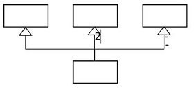
class Monster
{ ... // private және public-тен басқа,
// protected қолданылады
}
class Daemon : Monster
{ ...
}
• C# тілінде кластың ұрпақтары саны бірнешеу болуы мүмкін
• Кластың тек бір ата-кластан және интерфейстердің кез келген санынан мұралау мүмкіндігі бар.
• Мұралау кезінде ұрпағы ата-тегінің барлық элементтерін қабылдайды.
• private элементтерін оның ұрпақтары тікелей пайдалана алмайды.
• protected элементтерін тек ұрпақтары пайдалана алады.
Кластың жалпы мысалы
class Monster {
public Monster() // конструктор
{
this.name = "Noname";
this.health = 100;
this.ammo = 100;
}
public Monster( string name ) : this() { this.name = name;
}
public Monster( int health, int ammo, string name )
{ this.name = name;
this.health = health; this.ammo = ammo;
} public int Health { // қасиет
get { return health;
}
set { if (value > 0) health = value;
else health = 0;
}
}
public int Ammo { // қасиет
get { return ammo;
}
set
{
if (value > 0) ammo = value;
else ammo = 0;
}
}
public string Name { // қасиет get
{ return name;
}
}
public void Passport() // тәсіл
{ Console.WriteLine(
"Monster {0} \t health = {1} \
ammo = {2}", name, health, ammo );
}
public override string ToString(){
string buf = string.Format(
"Monster {0} \t health = {1} \
ammo = {2}", name, health, ammo);
return buf;
}
string name; // private өрістер
int health, ammo;
Daemon, Monster класының мұрагері
class Daemon : Monster {
public Daemon() { brain = 1;
} public Daemon( string name, int brain ) :base( name ) this.brain = brain;
}
public Daemon( int health, int ammo, string name, int brain )
: base( health, ammo, name ) { this.brain = brain; }
new public void Passport() {
Console.WriteLine( "Daemon {0} \t health ={1} ammo ={2} brain ={3}",
Name, Health, Ammo, brain );
}
public void Think()
{
Console.Write( Name + " is" );
for ( int i = 0; i < brain; ++i ) Console.Write( " thinking" );
Console.WriteLine( "..." ); } int brain; // жабық өріс
}
public void Passport() // тәсіл
{
Console.WriteLine( "Monster {0} \t health = {1} \ ammo = {2}", name, health, ammo );
}
Өрістер мен тәсілдерді мұралау
• Кластың өрістері, тәсілдері және қасиеттері мұраланады.
• Базалық класс элементін жаңа элементке алмастыру қажет болғанда new түйінді сөзін қолданғанжөн:
// Daemon класының тәсілдері (тегінің функцияларын толықтыру)
new public void Passport() {
base.Passport(); // ата-тегінің функцияларын қолдану
Console.WriteLine( brain ); // толықтыру
}
// Daemon класының тәсілі (толық алмастыру)
new public void Passport() {
Console.WriteLine( "Daemon {0} \t health ={1} ammo ={2} brain ={3}",
Name, Health, Ammo, brain );
}
// Monster класының тәсілі
public void Passport()
{
Console.WriteLine(
"Monster {0} \t health = {1} \
ammo = {2}",
name, health, ammo );
}
Виртуалды тәсілдерді қолдану
• Виртуалды тәсілдер туынды кластармен базалық класқа сілтеме жасау арқылы жұмыс істегендеқолданылады.
• Сонымен қатар, объектілерді тәсілдерге параметр ретінде беру кезінде виртуалды тәсілдерқолданылады. Тәсілдің параметрлерінде базалық типті объект сипатталады, ал шақыру кезінде оғантуынды класс объектісі беріледі. Бұл жағдайда тәсілдің ішіндегі объект үшін шақырылатынвиртуалды тәсілдер параметрдің емес, аргументтің типіне сәйкес болады.
• Кластарды сипаттау кезінде виртуалды тәсілдер ретінде туынды кластарда басқа жолменорындалатын тәсілдерді анықтау ұсынылады. Егер иерархияның барлық кластарында тәсілбірыңғай жүзеге асатын болса, оны жай тәсіл ретінде анықтаған жөн.
Абстрактілі кластар
• Абстрактілі класс тек ұрпақтарды тудыру үшін қолданылады. Әдетте онда ұрпақтардыңәрқайсысы өзінің қолданатын жолымен жүзеге асыратын тәсілдер жиыны беріледі. Абстрактілікластар туынды кластарда нақтылануы жоспарланатын жалпы ұғымдарды бейнелеуге арналған.
• Абстрактілі класс иерархия үшін толықтай интерфейсті анықтайды және бұл кезде класстәсілдеріне ешбір нақты әрекеттер сәйкес келмеуі мүмкін. Бұл жағдайда тәсілдердің тұлғасы босболады және олар abstract спецификациясымен жарияланады.
• Егер класта кем дегенде бір абстрактілі тәсіл бар болса, класс түгелдей абстрактілі класс ретінде(abstract спецификаторымен) сипатталуы тиіс.
• Абстрактілі кластың құрамында толықтай анықталған тәсілдер де болуы мүмкін, бұл оныңинтерфейстен айырмашылығы.
Полиморфты тәсілдер
• Абстрактілі кластар келесі жағдайларда қолданылады:
• бір иерархияның объектілерін сақтауға арналған мәліметтер құрылымдарымен жұмыс істеукезінде
• тәсілдердің параметрлері ретінде.
• Егер абстрактілі кластан туындаған класс барлық абстрактілі тәсілдерді қайта анықтайтынболмаса, ол да абстрактілі класс ретінде сипатталуы тиіс.
• Параметрі абстрактілі класс болатындай тәсіл құруға мүмкіндігі бар. Программаның орындалуыбарысында бұл параметрдің орнына кез келген туынды кластың объектісі берілуі мүмкін. Бұл біриерархия шеңберіндегі кез келген типті объектімен жұмыс істейтін полиморфты тәсілдерді құруғамүмкіндік береді.
Жүзеге асырылған тәсілге интерфейс типті объект арқылы қатынас құру
Бұл жолдың ыңғайлылығы IAction типті объектілерге осы интерфейсті қолдайтын әртүрлі классобъектілеріне сілтемені меншіктеу кезінде байқалады.
Мысалы, интерфейс типті параметрі бар тәсіл бар болсын. Бұл параметрдің орнына интерфейстіжүзеге асыратын кез келген объектіні беруге болады:
static void Act( IAction A )
{
A.Draw();
}
static void Main()
{
Monster Vasia = new Monster( 50, 50, "Вася" );
Act( Vasia );
...
}
Интерфейстер және мұралау
Интерфейстің ата-тегі болмауы мүмкін немесе олардың саны бірнешеу болуы да мүмкін, соңғыжағдайда ол ең жоғарғы деңгейден бастап, өзінің барлық базалық интерфейстерінің барлықэлементтерін мұралайды.
Базалық интерфейстерге олардың ұрпақтарынан кем болмайтындай деңгейде қол жеткізілетінболуы тиіс.
Әдеттегі кластар иерархиясы сияқты, базалық интер-фейстер жалпылама әрекеттер сипатынанықтайды, ал олардың ұрпақтары оны нақтылайды және толықтырады.
Сонымен қатар, ұрпақтар интерфейсінде сигнатурасы бірдей, мұраланған элементтерді қайтаанықтаушы элементтерді көрсетуге болады. Мұндайда элементтің алдына кластардағы сияқты new түйінді сөзі жазылады. Осы сөздің көмегімен базалық интерфейстің соларға сәйкес элементіжасырылады.
Мысал
interface IBase { void F( int i ); }
interface Ileft : IBase {
new void F( int i ); /* F тәсілін қайта анықтау */ }
interface Iright : IBase { void G(); }
interface Iderived : ILeft, IRight {}
class A {
void Test( IDerived d ) {
d.F( 1 ); // ILeft.F шақырылады
((IBase)d).F( 1 ); // IBase.F шақырылады
((ILeft)d).F( 1 ); // ILeft.F шақырылады
((IRight)d).F( 1 ); // IBase.F шақырылады
}
}
IDerived — IRight — IBase тізбегінде қайта анықталмағанына қарамастан, IBase интерфейсінің Fтәсілі ILeft интерфейсімен жасырылған.
Интерфейстерді жүзеге асырудың ерекшеліктері
Интерфейсті жүзеге асыратын класс оның барлық элементтерін, оның ішінде, мұраланғандарында анықтауы керек. Егер осындай жағдайда интерфейстің аты нақты түрде көрсетілетін болса, олосыған сәйкес элемент сипатталған интерфейске сілтеме жасауы тиіс.
Өзіндік немесе мұраланған элементтерге нақты сілтеме жасайтын интерфейс класс ата-тектерітізімінде көрсетілуі тиіс.
Класс өзінің ата тегінің барлық тәсілдерін, оның ішінде, интерфейстерді жүзеге асырғандарын дамұралайды. Ол осы тәсілдерді new спецификаторының көмегімен қайта анықтай алады, алайдаолармен тек класс объектісі арқылы ғана қатынас құруға болады.
Стандартты .NET интерфейстері
.NET кластар кітаханасында объектілердің қажетті әрекет-терін тағайындайтын көптегенстандартты интерфейстер анықталған. Мысалы, IComparable интерфейсі объекті-лерді «үлкен-кіші» деген сияқты салыстыру тәсілін тағайындайды, бұл оларды реттеуге мүмкіндік береді.
IEnumerable және IEnumerator интерфейстерін жүзеге асыру foreach көмегімен объект құрамынкөруге, ал ICloneable интерфейсін жүзеге асыру объектілерді клондауға мүмкіндік береді.
Стандартты интерфейстерді кітапхананың көптеген стандартты кластары сүйемелдейді. Мысалы, foreach көмегімен жиыммен жұмыс істеу мүмкіндігінің болу себебі – Array типі IEnumerable жәнеIEnumerator интерфейс-терін жүзеге асырады.
Стандартты интерфейстерді сүйемелдейтін өз кластары-мызды да құруға болады, бұл осыкластар объектілерін стандартты тәсілдер көмегімен пайдалануға мүмкіндік береді.
Объектілерді салыстыру
IComparable интерфейсі System атаулар кеңістігінде анықталған. Оның құрамында тек бір ғанаCompareTo тәсілі бар, ол екі объектіні – ағымдағы және оған параметр ретінде берілген объектілердісалыстыру нәтижесін қайтарады.
interface
IComparable {
int CompareTo( object obj )
}
Тәсіл төмендегідей нәтижелерді қайтаруы тиіс:
0, егер ағымдағы объект пен параметр тең болса;
теріс сан, егер ағымдағы объект параметрден кіші болса;
оң сан, егер ағымдағы объект параметрден үлкен болса.
Программалау үшін берілетін ұсыныстар
Мұралаудың негізгі артықшылығы – базалық класс деңгейінде туынды класс объектілерімен де жұмыс істеуге мүмкіндік беретін универсалды код жазуға болады, бұл виртуалды тәсілдеркөмегімен жүзеге асырылады.
Виртуалды тәсілдер ретінде иерархияның барлық кластарында бір функцияны (мүмкін әртүрлітәсілдермен) атқаратын тәсілдер сипатталуы тиіс.
Туынды кластарда нақтылануы жоспарланатын жалпы ұғымдарды бейнелеу үшін абстрактілікластар қолданылады. Әдетте абстрактілі класта ұрпақтардың әрқайсысы өзінің қолданатынжолымен жүзеге асыратын тәсілдер жиыны, яғни интерфейс беріледі.
Жай тәсілдерді (виртуалды емес) туынды класта қайта анықтау ұсынылмайды.
Кластардың негізгі элементтері: өрістерді, тәсілдерді, конструкторларды, қасиеттердіпайдалану жолдары
- Кластар туралы жалпы мәліметтер
- Класс спецификаторлары
- Класс объектілерін жасау
- Объектілерді меншіктеу және салыстыру
- Мәліметтер: өрістер мен константалар
- Класс өрісінің спецификаторлары мен константалары
- Тәсілдер
- Тәсілдер параметрлері
- Тәсілді шақыру
- Параметрлерді беру тәсілдері және олардың типтері
- Параметрлерді қолдану ережелері
- this түйінді сөзі
- Конструкторлар
- Қасиеттер
Класс сипаттамасы class түйінді сөзі мен класс атынан тұрады да, жүйелі жақша ішінде класс тұлғасы – оның элементтері тізімі орналасады. Бұларға қоса, кластың базалық элементтерін (тегі-предки) және әртүрлі сипаттары анықталатын, міндетті емес бірсыпыра атрибуттары мен спецификаторларын беруге болады.
Тәсіл — класпен немесе экземплярмен атқарылатын есептеу-лерді орындайтынфункционалдық элемент. Тәсілдер кластың тәртібін анықтайды да, оның интерфейсін құрайды.
Тәсіл — аты арқылы пайдалануға болатын, аяқталған код фрагменті. Ол бір рет жазылады да, қанша рет қажет болса, сонша рет шақырылып орындала береді.
Бір тәсіл оған аргумент ретінде берілген әртүрлі мәліметтерді өңдей алады.
Төмендегі мысалға қараңыз:
Тәсілге параметрлерді беру мысалы
using System;
namespace Lisning5_3 {
class Class1 { static int Max(int a, int b) // макс. мәнді таңдау
{ if ( a > b ) return a;
else return b;
}
static void Main()
{ int a = 2, b = 4;
int x = Max( a, b ); // Max тәсілін шақыру
Console.WriteLine( x ); // нәтижесі: 4
short t1 = 3, t2 = 4;
int y = Max( t1, t2 ); // үйлесімді тип пар-рлері
Console.WriteLine( y ); // нәтижесі : 4
int z = Max( a + t1, t1 / 2 * b ); // өрнек
Console.WriteLine( z ); // нәтижесі : 5
}
}
}
Параметрлерді беру тәсілдері және олардың типтері
Параметрлерді беру тәсілдері: мән бойынша және сілтеме бойынша. Параметрлерді мәнбойынша беру кезінде тәсіл аргументтер мәнінің көшірмелерін алады да, тәсіл операторлары осы көшірмелермен жұмыс істейді.
Параметрлерді сілтеме (адрес) бойынша беру кезінде тәсіл аргументтер адресінің көшірмесіналады да, сол (бұрынғы) адрестердегі аргументтерді пайдаланады.
С# тілінде параметрлердің төрт типі бар:
- мән-параметрлер;
- сілтеме-параметрлер (ref);
- нәтижелік (шығыс - выходные) параметрлер (out);
- жиым-параметрлер (params).
Түйінді сөздер параметрлер типтерін сипаттаудың алдында тұрады. Егер ол болмаса, параметр мән-параметр болып есептеледі. Мысалы:
public int Calculate( int a, ref int b, out int c, params int[] d ) …
Мысал: мән-параметрлер мен ref сілтемелері
using System;
namespace Listing5_4
{ class Class1
{ static void P( int a, ref int b )
{
a = 44;
b = 33;
Console.WriteLine( "тәсіл ішінде {0} {1}", a, b );
} static void Main()
{
int a = 2, b = 4;
Console.WriteLine( "шақыруға дейін {0} {1}", a, b );
P( a, ref b );
Console.WriteLine("шақырудан кейін {0} {1}", a, b );
}
}
}
Мысал: out шығыс параметрлері
using System;
namespace Listing5_5
{ class Class1
{ static void P( int x, out int y )
{
x = 44; y = 33;
Console.WriteLine( " тәсіл ішінде {0} {1}", x, y );
}
static void Main()
{
int a = 2, b; // b-ны инициалдау қажет емес
P( a, out b );
Console.WriteLine( "шақырудан кейін {0} {1}", a, b );
}
}
}
Мән-параметрлер үшін мән бойынша параметр беру қолданылады. Бұл мүмкіндік тәсілдіңбастапқы мәліметтері үшін қолданылады.
Тәсілді шақыру кезінде мән бойынша берілетін параметр орнында өрнек болуы мүмкін (жәнеде оның жеке жағдайы ретінде — айнымалы немесе константа). Мұнда өрнек типі параметр типінекелтірілуі керек.
Сілтеме-параметрлер және нәтижелік (шығыс) параметрлер адрес бойынша беріледі. Мұндай мүмкіндік тәсілдің қосалқы нәтижелерін (побочные результаты) беру кезінде қолданылады.
Тәсілді шақыру кезінде ref сілтемесі бойынша берілетін параметр орнында тек сол типтегіинициалданған айнымалы аты ғана болуы мүмкін.
Параметр аты алдында ref түйінді сөзікөрсетіледі.
Тәсілді шақыру кезінде out нәтижелік (шығыс) параметр орнында тек сол типтегі айнымалыаты ғана болуы мүмкін. Оны инициалдау қажет емес. Параметр аты алдында out түйінді сөзі көрсетіледі.
This түйінді сөзі
Тәсілдің ол өңдеуге тиіс объект өрісімен жұмыс істеуін қамтамасыз ету үшін, сол тәсілгеавтоматты түрде this жасырын параметрі беріледі, ол функцияны шақырған объектіге сілтеме жасаптұрады.
this сөзін нақты түрде пайдалану
this параметрі тікелей түрде мынадай жағдайларда қолданылады:
// тәсілден оны шақырған объектіге сілтеме қайтару үшін:
class Demo
{ double y;
public Demo T() { return this;
} // аты тәсіл параметрі атымен бірдей өрісті идентификациялауүшін:
public void Sety( double y ) { this.y = y; }
}
Конструкторлар
Конструктор объектіні инициалдау үшін қажет. Ол класс объектісін жасау кезінде newоперациясы арқылы шақырылады. Конструктор аты класс атымен бірдей болады.
Конструкторлар қасиеттері:
Конструктор ешқандай мән (тіпті void типін де) қайтармайды. Кластың, инициалдаудың әртүрлері үшін әртүрлі параметрлері бар, бірнеше конструкторлары болуы мүмкін.
Егер программалаушы бірде-бір конструкторды көрсетпесе немесе кейбір өрістеринициалданбаса, мәндік типтегі өрістерге — нөл, ал сілтемелік типтегі өрістерге — null мәніменшіктеледі.
Параметрсіз шақырылатын конструктор (үнсіз) келісім бойынша алынған конструктор деп аталады. Конструкторы бар класс мысалы
using System;
namespace Listing5_6 {
class Demo { public Demo( int a, double y ) // конструктор
{ this.a = a; this.y = y; }
int a; double y;
}
class Class1
{
static void Main()
{
Demo a = new Demo( 300, 0.002 ); // конструкторды шақыру
Console.WriteLine( a.Gety() ); // нәтиже: 0,002
Demo b = new Demo( 1, 5.71 ); // конструкторды шақыру
Console.WriteLine( b.Gety() ); // нәтиже : 5,71
} } }
Екі конструкторы бар класс мысалы
class Demo
{
public Demo( int a ) // 1 конструктор
{
this.a = a;
this.y = 0.002;
}
public Demo( double y ) // 2 конструктор
{
this.a = 1;
this.y = y;
}
...
}
...
Demo x = new Demo( 300 ); // 1 конструкторды шақыру
Demo y = new Demo( 5.71 ); // 2 конструкторды шақыру
Жалпы класс мысалы
class Monster {
public Monster() // конструктор
{
this.name = "Noname";
this.health = 100;
this.ammo = 100;
} public Monster( string name ) : this() { this.name = name;
} public Monster( int health, int ammo, string name )
{ this.name = name; this.health = health; this.ammo = ammo;
}
public int GetName() // тәсіл { return name;
} public int GetAmmo() // тәсіл { return ammo;
}
Қасиеттер
Қасиеттер класс өрістерімен қатынас құру үшін пайдаланылады. Көбінесе, қасиет жабықөрістермен қатынас құру тәсілдерін анықтайды.
Қасиет синтаксисі:
[ спецификаторлар ] типі қасиет_аты
{
[ get қатынасу_коды ]
[ set қатынасу_коды ]
}
Қасиеттерді пайдалану кезінде, автоматты түрде онда көрсетілген оқу (get) және орнату (set) блоктары шақырылады.
Мұнда не get, не set бөлігі болмауы мүмкін, бірақ екеуінің де бірден жоқ болуы мүмкін емес. Егер set бөлігі болмаса, қасиет тек оқылады (read-only), ал егер get бөлігі болмаса – тек жазылады(write-only)